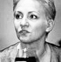

Daina Ludāne b. 1961
Wife of Peter's second cousin once removed Jānis Sirlaks.
Living. As for every living relative on this site, the birth date is given by year only, and no current address is shown.
Also recorded as Daina Sirlaka; Daina Ludāne (married name Sirlaka).
Daina Ludāne was born in 1961 (according to an online family tree)2. She married Jānis Sirlaks3,4.
Family
- Husband
- Jānis Sirlaks b. 1956 · married 3,4
- Children
- Dāvis Sirlaks b. 1988 documented
Life events
| Event | Date | Place and details |
|---|---|---|
| Born | 1961 | According to an online family tree2 |
| Married | with Jānis Sirlaks3,4 |
Photographs

Sources
- MyHeritage family tree 'Dzimta' of Peter's third cousin (his family site), member GEDCOM export of 26 Oct 2026, I500113 (person-6500113), GEDCOM lines 8840–8868.
NAME Daina /Ludāne/ · _MARNM Sirlaka
- MyHeritage family tree 'Dzimta' of Peter's third cousin (his family site), member GEDCOM export of 26 Oct 2026, I500113 (person-6500113), GEDCOM lines 8840–8868.
BIRT · 1961
- Ainas Sirlakas atmiņas ("Vīstuči"), Aina Jurciņa née Sirlaka, Priekuļi, 1998, p. 35, section "DĀVJA UN ALMAS OZOLA PAZARĪTES".
Jānis-Valda dēls Sirlaks … Daina Ludāne … Bērni: Dāvis, dz. 1988
Translation: Jānis Sirlaks, son of Valdis … Daina Ludāne … Children: Dāvis, b. 1988
LIVING couple; son Dāvis ("Dāvītis", 10 in 1998; p. 1) (LIVING).
- MyHeritage family tree 'Dzimta' of Peter's third cousin (his family site), member GEDCOM export of 26 Oct 2026, family F500052 (I500112 Jānis Sirlaks × I500113 Daina Ludāne).
MARR (no date or place)